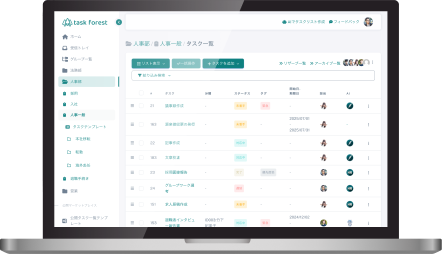
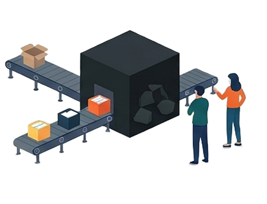
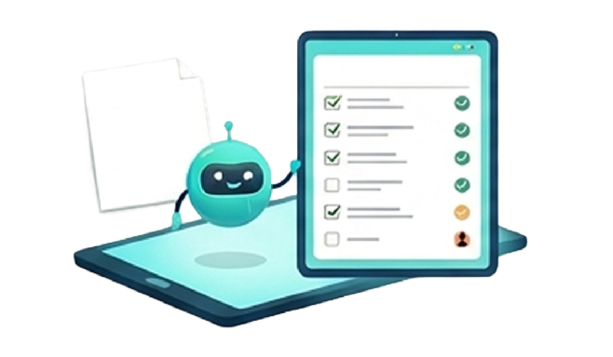
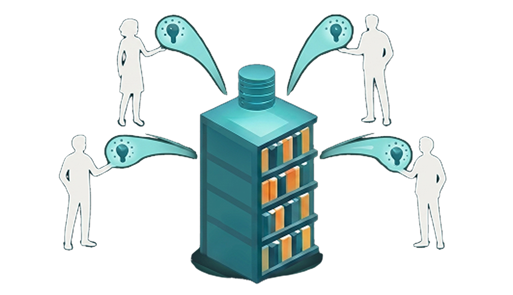
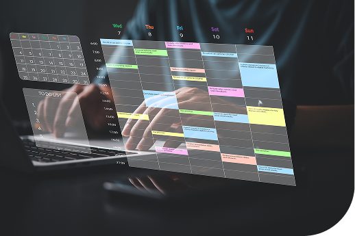
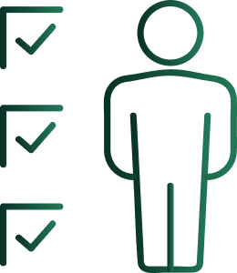
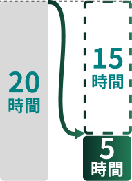
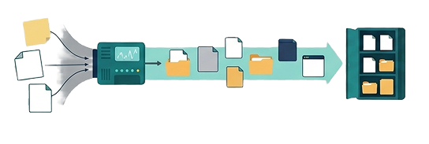
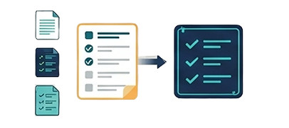

マニュアル不要
業務標準化ツール
「引き継ぎ」という、
経営最大のリスクをゼロにする
業務を資産に変え、
組織を属人化から解放する
業務標準化プラットフォーム
担当者の突然の退職、急な休職、急な異動…
「あの人にしか分からない」という業務のブラックボックスを自動で効率化
各担当者の属人化の作業を全て可視化し、再現性のある仕組みへ

1ヶ月無料で
自社の業務を資産化してみる
担当者の突然の退職、急な休職、急な異動…
「あの人にしか分からない」という業務のブラックボックスを自動で効率化
各担当者の属人化の作業を全て可視化し、再現性のある仕組みへ
業務標準化ツール
自動派生・管理
の工数削減が可能
マニュアルがなく、担当者しか手順を知らない
ブラックボックス化状態やマニュアルを作る時間の確保もできず、業務がストップ！

本来の業務が回らず、クレームに繋がってしまう・・・
は客観的な
視点から社内ノウハウを構造化し、解決策を提示します。

structure01
「担当者がいないと作業が止まる」最大の理由は、次に何をすべきかという「判断」の属人化が原因です。
task
forestは、一つの業務内容を指定すると、AIが関連する業務ややるべきタスクを自動で展開してくれます。前任者や担当者の頭の中で行っている「段取り」を可視化し、誰でも「見たらすぐ分かる」状態を即座に作り出します。

structure02
日々の実務をtask forest上でこなすだけで、そのプロセスが「タスクテンプレート」として自動的にパッケージ化。個人のスキルに依存していたパターンが、組織全体の「再現性のある仕組み」へと昇華。担当者しか知らないブラックボックスを解消し、誰が担当しても同じ品質でアウトプットを出せる環境として整えます。
structure03
組織AIが各実務のルールや過去の対応ログを学習し、誰が利用しても(インプット)、高品質でクオリティの高い処理で「その会社にとっての最適解」を提示(アウトプット)します。また、様々な利用シーンにおいて「使用者の知恵と方法」への処理が統一された状態でフォーマットとして登録されます。
「担当者しか手順を知らない」状態は、業務ストップの引き金です。task forestなら、例えば「月次決算」と1つ打つだけで、AIが過去の作業データから必要な工程を網羅的に「展開」させて一覧表示。熟練者の頭の中にある複雑な手順をその場で「具現化」します。

マニュアル作成のために進行中の作業を止める必要はありません。普段の業務をこなすだけで、その工数・ルール・手順が「タスクテンプレート」として自動的にパッケージ化されます。これは単なる記録ではなく、貴社だけの「再現性のある仕組み」として各担当者の「隠れたファインプレー」を可視化し、組織全体の共有資産としてデータベース化します。
担当者の離脱が「業務の死」であってはなりません。task forestに蓄積された手順は、担当者が辞めても組織AIの中に生き続けます。後任者はログインした瞬間から、AIのガイドに従って「見たらすぐ分かる」状態で作業を開始。引き継ぎ時間が取れない急な欠員や移動の際も、顧客対応が止まることなく、業績低下のリスクを鉄壁の守りで防ぎます。
Task Task Forestで実務を回し始めると、誰がどの作業にどれだけの時間を費やしているかがすべて数値データとして可視化されます。これまで「なんとなく」やっていた慣習的な業務や、重複している確認工程が客観的に浮き彫りになるため、経験や勘に頼らない、データに基づいた本質的な業務の整理・断捨離が可能になります。
use case
藤田医科大学様
「複雑な研究プロジェクトにおける情報共有のロスをゼロにし、
専門チームの意思決定を加速。」
導入の背景・課題
専門性の高い工程が属人化し、情報の検索や整理、チーム内での共有に膨大な時間を費やしていた。
「特許取得に必要なタスク」をAIに指示するだけで、専門的な工程を瞬時にリスト化。数時間の調査・整理作業を「数秒」へと短縮。
業務の全体像が「一目瞭然」になり、進捗確認のための不要な連絡が激減。
チーム全体の知恵が構造化され、誰でも迷わず高度な実務を遂行できる環境を構築。
研究チーム内のコミュニケーションが劇的に向上し、本来注力すべき「研究開発」にリソースを集中することに成功。
その他活用例
複雑な多タスクを構造化。異動や離職による進行停止を物理的に防ぐ。
月次の締め作業やルーチンを完全標準化。誰がやっても同じ品質で完遂。
新人が「何からやればいいか」を聞く時間をゼロに。引き継ぎコストを劇的に削減。
新人が「何からやればいいか」を聞く時間をゼロに。引き継ぎコストを劇的に削減。
task forest導入による、
理論上の最大効果シミュレーション
これらの数字は、平均的な事務・制作現場における人件費と、
task
forestの「業務資産化（タスクセット）」機能がもたらす物理的な工数削減ロジックに基づき算出された理論値です。
Before
40時間After
0分※資産化されているため

Before
3ヶ月After
1ヶ月※AIが手順を指示するため

Before
月20時間After
5時間※進捗がリアルタイム可視化
※システムの設計思想に基づいた「タスクセット活用時の理論値」
業務のマニュアル化を図るのはとても大変です。
Forestはツールを売って終わりではありません。業界特有のテンプレートと、専任コンサルタントによるサポートで、1ヶ月後には「迷わない組織」へ変貌させます。
専門コンサルタントが、
貴社のバラバラなToDoを「資産」に整理するまで伴走
マニュアルにある「権限設定」や「組織管理」の最適化もフルサポート
Step1

まずは、各担当者の頭の中にしかない「ブラックボックス化」した実務を棚卸しします。特別な準備は不要です。今やっている業務を文章で書くだけで、「何が、どこまで、どう進んでいるのか」を構造化。
「担当者しか知らない」状況をこの瞬間に終わらせます。
誰が何をやっているか「一目瞭然」の状態になり、
現場の不透明な不安が解消される
Step2

デジタル化した業務の中から、最も効率的でミスのない「成功パターン」を抽出。工数・ルール・手順をセットにした「タスクテンプレート（資産）」としてパッケージ化します。普段の業務をこなすだけで、貴社独自のナレッジデータベースが自動構築され、「見たらすぐ分かる」最強のマニュアルが具現化されます。
業務が属人化から解放され、「誰でも同じ業務ができる」再現性のある組織基盤が整う
Step3
構築されたタスクテンプレートに基づき、ユーザーの仕事のサポーターとして稼働を開始します。急な退職や移動が発生しても、task forestが後任者に最適な手順を指示。タスクテンプレート(組織AI)を利用するだけで、管理職がつきっきりで教える必要はなくなり、誰もが即戦力として業務を継続することができます。
業務ストップやクレームの連鎖を断ち切り、社長が現場に不在でも
「安定して回り続ける」経営を実現
FLOW
本運用まで簡単 4 ステップ
お問い合わせ
まずは現状の課題をヒアリングします。特定の担当者に依存している「ブラックボックス業務」はどこか、どの業務が止まると最も大きなダメージ（クレーム等）に繋がるかを特定。最短で資産化すべき優先順位を決定します。
ヒアリング/
初期設定
Task Forestのマニュアル（10.5項）に基づき、貴社専用の「組織AI」をセットアップします。
既存のTODOや業務フローを読み込ませるだけで、AIが貴社のルールを学習。熟練者の「判断基準」をデジタル上に再現し、「見たらすぐ分かる」手順（タスクテンプレート）を具現化します。
トライアル開始
実際の現場で1ヶ月間、フル機能をお試しいただきます。普段通り業務をこなすだけで、AIが「最適な業務効率」を自動提案。「急な欠員」を想定した模擬テストなども行い、担当者が不在でもAIのガイドだけで業務が完結する驚きを体感してください。
本運用
全社的な運用を開始します。日々の実務がそのまま「組織の知恵」として蓄積され続けるため、使えば使うほど会社が強く、安定していきます。退職や異動のリスクに怯えることなく、社長が本来の「経営判断」に集中できる環境が完成します。
FAQ
A
AIで業務を効率化したい企業、属人化や抜け漏れに課題を感じている企業に向いています。
A
はい。数名のチームでも利用可能です。数名のチームから大企業まで柔軟に使えるのが特徴です。
A
はい。専門知識は不要です。自然な文章で業務を入力するだけでAIがサポートします。
A
task forestは「管理」ではなく「実行」に焦点を当てています。人がやるべきことの一部をAIが肩代わりして実行、再現性を高めることで支援します。
A
task 手作業での更新や属人管理ではなく、業務の構造そのものを改善できます。また、AIによる実行・標準化も可能です。
A
task プロジェクト管理も行えますが、プロジェクト管理ツールでは手の届かない「日常業務の繰り返し」に非常に有効です。
A
業務内容を入力すると、必要なタスクの洗い出し・整理を自動で行うことができます。また、個別のタスクについては人間が行う前提ですがAIが実行の多くを支援することができます。
A
初期状態でも実務に使えるレベルですが、使うほど組織に最適化されていきます。
A
完全にゼロではありませんが、編集・修正は簡単にできる設計になっています。
A
業務内容によりますが、タスク整理・引き継ぎ・確認作業で50〜75%程度の削減が見込まれます。
A
早い場合は導入初日から「抜け漏れ防止」の効果を実感できます。1〜2週間で業務改善が進みます。
A
人件費の削減だけでなく、ミス削減・引き継ぎ効率化による間接的な利益も大きいです。
A
最初は簡単な業務を入力するだけで開始できます。大規模な初期設定は不要です。
A
データは安全に管理され、企業利用を前提とした設計になっています。
A
はい。データは安全に保存され、復旧可能な仕組みになっています。
A
はい。スモールスタートが可能です。まずは一部業務で試すことを推奨しています。
A
導入支援・運用サポートを提供しています。
「担当者がいないと分からない」という不安、
今日で終わりにしませんか？
（※貴社の業務に合わせた「属人化リスク診断＆シミュレーション」を無料作成）
FORM
引き継ぎ準備40時間を0時間に、新人の即戦力化を3倍速める。
貴社の業務状況に合わせて、最適な効率化プランをシミュレーションいたします。
まずは1ヶ月、その効果をご体感ください。